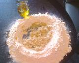
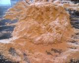
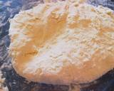
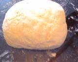
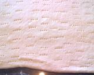
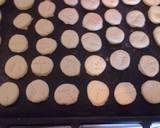
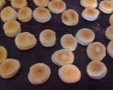

Ingredientes
(6 porciones)
- 500 g Harina común
- 150 cc. Agua
- 15 g Sal
- 25 g Levadura
- 150 g Grasa o margarina

1. Formamos un volcán con la harina, la sal, y en el centro la levadura, la grasa derretida y el agua.

2. Amasar hasta obtener una masa lisa y dejar descansar 20' minutos.

3. En esos 20 minutos la masa levará, como en la foto.

4. Envolver la masa con papel film o una bolsa para dejarla descansar.

5. Luego pasados los 20' minutos estiramos la masa y pinchamos la misma con un tenedor.

6. Cortamos los bizcochitos y colocamos en bandeja engrasada o enmantecada y rociamos los bizcochitos con sal.

7. Una vez dorados, darlos vuelta y rociar nuevamente con sal. Cocinar en horno bien caliente hasta que se doren.
8. Así nos quedan, estos ricos bizcochitos para compartir con la familia o amigos.